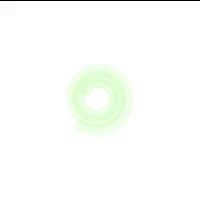
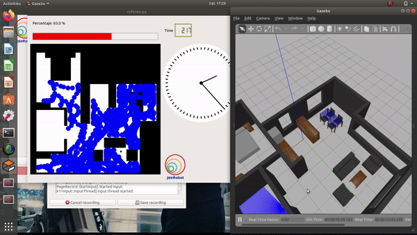

Coverage Path Planning is an important area of research in Path Planning for robotics, which involves finding a path that passes through every reachable position in it’s environment. This post discusses a very basic Coverage Algorithm called Random Exploration, it’s implementations and some observations regarding it.

Analyzing Coverage Algorithms
Classification
Coverage Algorithms are divided into 2 categories.
-
Offline coverage use fixed information and the envionment is known in advance. Genetic Algorithms, Neural Networks, Cellular Decomposition, Spanning Trees are some examples to name a few.
-
Online coverage uses real time measurements and decisions to cover the entire area. Sensor based approach are included in this category.
Base Movement
The problem of coverage involves two standard basic motions, which are used as a base for other complex coverage algorithms.
- Spiral Motion The robot follows an increasing circle/square pattern.

- Boustrophedon Motion The robot follows an S-shaped pattern.

The animations are taken from this github project
Analysis
Any coverage algorithm is analyzed using the given criterion.
-
Environment Decomposition involves dividing the area into seperate smaller parts.
-
Sweep Direction influences the optimality of generated paths for each sub-region by adjusting the duration, speed and direction of each sweep.
-
Optimal Backtracking involves the plan to move from one small subregion to another. The coverage is said to be complete when there is no point left to backtrack.
Supplements
Usually, coverage algorithms generate a linear, piecewise path composed of straight lines and sharp turns. This path is difficult for other autonomous drones like Underwater Vehicles, Aerial Vehicles and some Ground Vehicles difficult to follow. Path Smoothening is applied to these paths to effectively implement the algorithm.
Follow this link for comparision of different robovacs available in the market.
Implementation
The simplest coverage algorithm, called Random Exploration is implemented for the purpose of this blog. The algorithm is implemented on the vacuum_cleaner exercise of JdeRobot Robotics Academy.
Random library is used to generate random angles for the robot. One simple implementation would be to assign a constant angular velocity to the robot and let the robot rotate for a random amount of time.
self.motors.sendAZ(angular_velocity) #Sending angular velocity
rospy.sleep(random.random() * pi) # Sleep function
The direction of rotation can also be randomized or adjusted according to the signal of the bump sensor.
Once, a direction has been fixed simply move the robot in that direction.
self.motors.sendV(linear_veloctiy)
After experiencing a collision the robot should again select a random angle and move towards it. The robot will keep doing this motion until the desired amount of cleanliness or the time alloted is expired.

Random Exploration Algorithm
Observation and Results
It is quite evident that the random algorithm in no way can acheive 100% sweep accuracy. Still, this algorithm gives pretty good results most of the time.

The current room in which the robot is sweeping, resembles an artifical black body. An entity from which light cannot escape, once it enters! The robot resembles a packet of light entered into the black body
There is one simple problem observed in this algorithm. In order to enter different rooms of the house, the robot needs to be in specific locations with a specific angle. Once the robot enters that room(configuration) that robot will not leave the room until it goes into the specific configuration of location and angle. This is a problem because, it makes it difficult to enter some rooms and even exit some rooms, which causes a problem in efficiently covering the whole area.
Note: The observation given above is a what I observed by repeatedly running the algorithm. There is no foundational mathematics behind the observation and it may be completely wrong, or a new theory altogether(Please give me the credit, if it comes out to be a new theory).